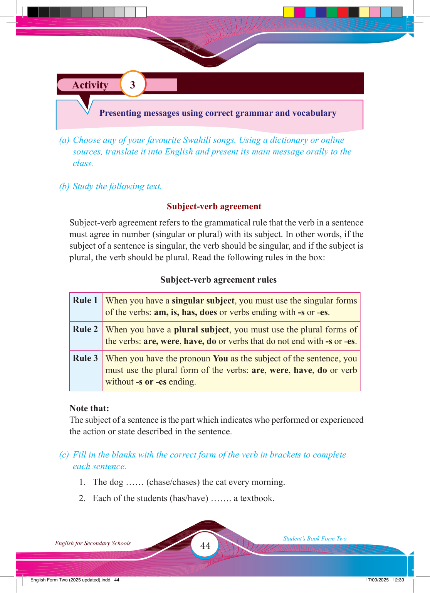

Activity 3
Presenting messages using correct grammar and vocabulary
(a) Choose any of your favourite Swahili songs. Using a dictionary or online sources, translate it into English and present its main message orally to the class.
(b) Study the following text.
Subject-verb agreement
Subject-verb agreement refers to the grammatical rule that the verb in a sentence must agree in number (singular or plural) with its subject. In other words, if the subject of a sentence is singular, the verb should be singular, and if the subject is plural, the verb should be plural. Read the following rules in the box:
Subject-verb agreement rules
Rule 1 When you have a singular subject, you must use the singular forms of the verbs: am, is, has, does or verbs ending with -s or -es.
Rule 2 When you have a plural subject, you must use the plural forms of the verbs: are, were, have, do or verbs that do not end with -s or -es.
Rule 3 When you have the pronoun You as the subject of the sentence, you must use the plural form of the verbs: are, were, have, do or verb without -s or -es ending.
Note that:
The subject of a sentence is the part which indicates who performed or experienced
the action or state described in the sentence.
(c) Fill in the blanks with the correct form of the verb in brackets to complete each sentence.
1. The dog …… (chase/chases) the cat every morning.
2. Each of the students (has/have) ……. a textbook.
17/09/2025 12:39